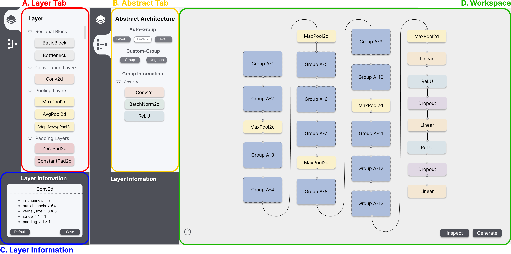
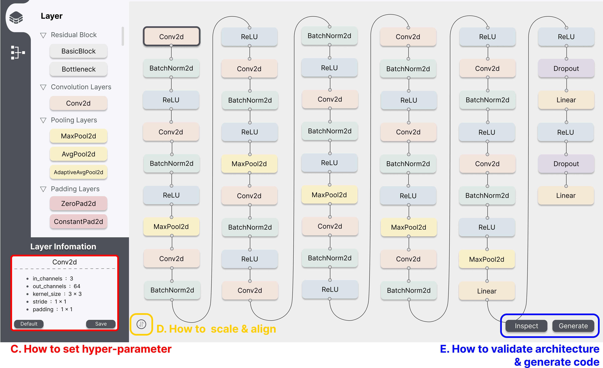
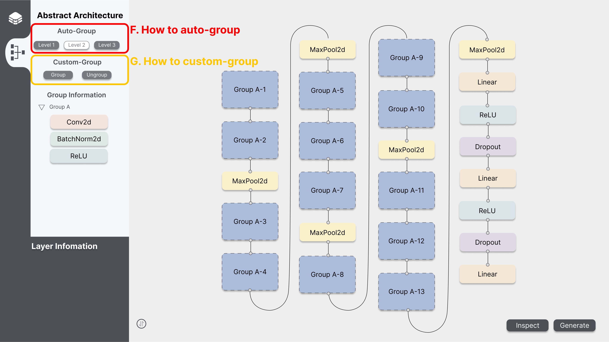

Target Aware No-code neural network Generation and Operation framework
Announcement
Introduction to TANGO
TANGO (Target Aware No-code neural network Generation and Operation framework) is code name of project for Integrated Machine Learning Framework.
The TANGO framework is an automated neural network generation and deployment solution designed for novice users with little to no coding expertise. It simplifies the process of creating and deploying neural network applications by providing an intuitive environment, including a project manager and neural network visualization tools. Users are required only to prepare labeled datasets and define target devices. TANGO performs an analysis of the datasets and device characteristics, generates task-specific neural networks aligned with user requirements, trains the models, and packages them as Docker container images for seamless deployment onto the specified target devices.
Each component of TANGO is a self-contained service implemented using container technology, interacting with other components through REST APIs. The entire framework can be accessed and executed via TANGO GitHub repository.
To ensure users understand the neural network architecture, TANGO provides a visual representation of the base model. Our team developed the visualization tools and implemented the code deployment framework to support this functionality. This post provides a brief overview of the implemented features.

A. Layer Tab
The Layer Tab represents the types of layers that can be employed when constructing the deep learning architecture.
- Types of layers: Set based on the official PyTorch documentation and represented as a toggle.
- Layers: Become visible when pressing the type toggle and are color-coded according to their respective types.
B. Abstract Tab
The Abstract Tab represents a feature to group the architecture configured by the user and its functionality is divided into auto-group and custom-group.
- Auto-Group: Automatically groups nodes and edges according to pre-defined levels (e.g., 3 levels in ResNet50) based on key architectural characteristics.
- Custom-Group: Allows users to manually group selected nodes and edges into specific grouping levels based on user-defined criteria.
C. Layer Information
The Layer Information represents a feature to edit the hyperparameters of the layers that consist of the architecture.
D. Workspace
The Workspace is a space for configuring architecture using the layers from the Layer Tab, and it offers functionalities such as Alignment, Architecture Validation, and Deep Learning Code Generation.
- Alignment: Vertically aligns the nodes in the workspace to provide a clear and organized view of the architecture.
- Architecture Validation: Displays the results of dimension compatibility validation between nodes in red and parameter variability validation in blue.
- Deep Learning Code Generation: Exports the user-configured architecture as a code file in a format supported by PyTorch (i.e., pth).

A. How to construct architecture
- Add Node: By dragging a layer node from the Layer Selection to Workspace, the desired node is created in the Workspace.
- Connect Nodes: By dragging the top or bottom points of a node to the points of another node, the edge is created between the two nodes.
- Eliminate Node or Edge: By clicking the target node or edge and pressing the backspace key, the target node is eliminated.
B. How to set hyper-parameter
- By clicking the node in the workspace, you can see the layer information window located at the bottom. Then you can edit the value of hyper-parameters in each field.
- Default button: By clicking the default button located at the bottom-left of the layer information window, the value of hyper-parameters will be changed to the default value.
- Save button: By clicking the save button located at the bottom-right of the layer information window, the value of hyper-parameters will be saved to the database.
C. How to scale & align
- Scaling up & down: By scrolling the mouse wheel upward, nodes and edges will zoom in for a magnified view. Conversely, by scrolling the mouse wheel downward, nodes and edges will zoom out to show a reduced size.
- Architecture Alignment: By clicking the Alignment button located in the bottom left of the Workspace, the nodes in the Workspace are aligned vertically.
D. How to validate architecture & generate code
- Architecture Validation: By clicking the Inspect button located in the bottom right of the Workspace, the results of dimension compatibility between nodes are displayed in red, and parameter variability is displayed in blue.
- Deep Learning Code Generation: By clicking the Generate button located in the bottom right of the Workspace, a code file format (i.e., pth) of the constructed architecture is exported.

E. How to auto-group
- By clicking the level buttons, the user can group layers for the desired level.
- The information about abstracted layers can be found in the group information window.
- Levels
- The higher the level, the more layers can be abstracted into groups.
- For example, in the case of VGG-16, it can be grouped as follows.
- Level 1: None of the nodes are represented as a group.
- Level 2: The “Conv2d”, “BatchNorm2d”, and “ReLU” nodes are represented as a group.
- Level 3: The “Conv2d”, “BatchNorm2d”, “ReLU”, “Conv2d”, “BatchNorm2d”, “ReLU”, and “MaxPool2d” are represented as one group. And “Conv2d”, “BatchNorm2d”, “ReLU”, “Conv2d”, “BatchNorm2d”, “ReLU”, “Conv2d”, “BatchNorm2d”, “ReLU”, “MaxPool2d” is represented by another group.
F. How to custom-group
- How to group
- Select nodes in the workspace and click the ‘Group’ button, the visualized architecture in the workspace automatically groups the chosen nodes and edges into the corresponding grouping level.
- How to ungroup
- Click the ‘Ungroup’ button in the Abstract Architecture Tab, and then the group will be ungrouped.
Key features of the Neural Network Deployment Module:
- Ability to convert neural network models into executable code
The neural network deployment module provides an automatic generation function for executable code templates, such as pre-processing code for neural network input and post-processing code for interpreting neural network output, so that the neural network model can be operated on the operating system, programming language, and inference engine.
Developer Guides and References
- TANGO Architecture Overview
- TANGO Container Port Mapping guide
- Exchanging Data among Containers
- TANGO REST API Guide
- how to prepare dataset for classification.pdf
Acknowledgement
This work was supported by Institute of Information & communications Technology Planning & Evaluation (IITP) grant funded by the Korea government(MSIT) (No. 2021-0-00766, Development of Integrated Development Framework that supports Automatic Neural Network Generation and Deployment optimized for Runtime Environment).